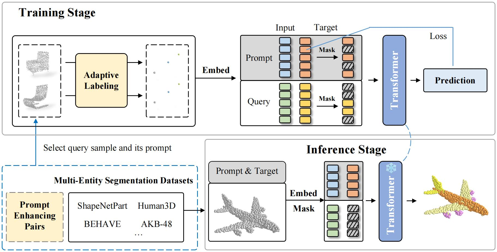
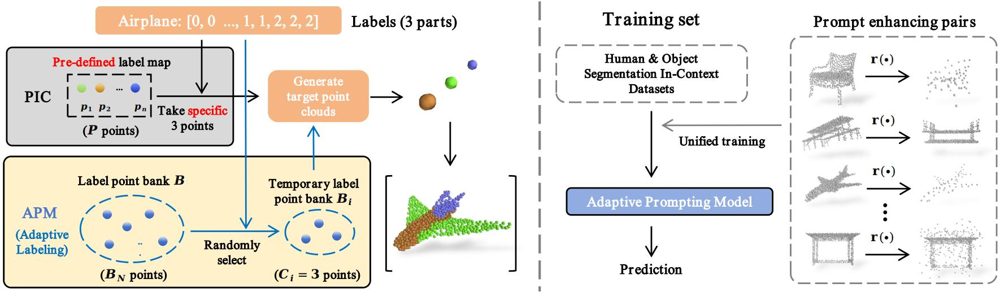
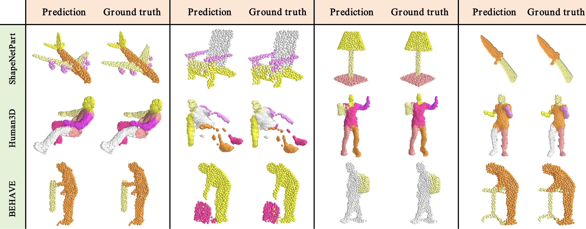
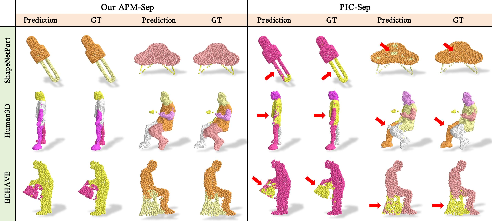
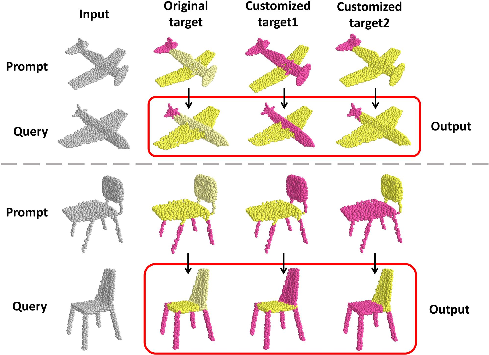

Novel part segmentation in 3D point clouds involves segmenting parts not included in the training dataset or from unseen combinations of parts. In this paper, we attempt to address novel part segmentation on unseen datasets or tasks by using prompting technology due to its features of efficient model adaptation domain-generalization capability. Recent works explore prompting in 3D point cloud segmentation by associating label points with the fixed XYZ coordinates of each category. However, this method of using fixed label points limits the model to generalize to new datasets, as well as introduces redundancy in label points as datasets increase, hindering model performance. To overcome these limitations, we propose the Adaptive Prompting Model (APM) based on vanilla transformer architecture. Our APM comprises two core training strategies: Adaptive Labeling (AL) and Prompt Enhancing (PE). Adaptive Labeling replaces fixed label point coordinates with dynamic label points, aligning the semantics of shared parts by randomly assigning label points within each point cloud. Prompt Enhancing employs various corruption operations to provide the model with more diverse point cloud pairs. This enables the model to learn more robust mapping relationships from the prompt pairs. Notably, our APM method can seamlessly integrate new part segmentation datasets without causing label redundancy. It requires only the necessary prompts. Furthermore, our APM requires only a single training stage and does not necessitate fine-tuning. Despite this, extensive experiments demonstrate that APM significantly outperforms other models in one-shot testing on the novel segmentation dataset. It also allows for the execution of the novel part segmentation task through customized prompts. Remarkably, our APM achieves state-of-the-art performance in multi-dataset joint training.





@article{liu2024pointincontext,
title={Point-In-Context: Understanding Point Cloud via In-Context Learning},
author={Liu, Mengyuan and Fang, Zhongbin and Li, Xia and Buhmann, Joachim M and Li, Xiangtai and Loy, Chen Change},
journal={arXiv preprint arXiv:2401.08210},
year={2024}
}
@article{fang2024explore,
title={Explore in-context learning for 3d point cloud understanding},
author={Fang, Zhongbin and Li, Xiangtai and Li, Xia and Buhmann, Joachim M and Loy, Chen Change and Liu, Mengyuan},
journal={Advances in Neural Information Processing Systems},
volume={36},
year={2024}
}